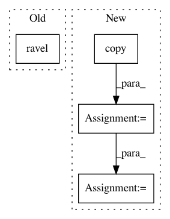

5d8b81e16143d6eea9e86a586fe737854c03c772,linearmodels/tests/panel/test_pooled_ols.py,,test_two_way_clustering,#Any#,216
Before Change
clusters = clusters.T
retain = mod.not_null
clusters = clusters.ravel()[retain, None]
clusters = pd.DataFrame(clusters, mod.dependent.dataframe.index, columns=["ids"])
clusters["entity_clusters"] = entity_clusters
After Change
y = PanelData(data.y)
entity_clusters = pd.DataFrame(y.entity_ids, index=y.index)
vc1 = PanelData(data.vc1)
clusters = vc1.copy()
clusters.dataframe["var.cluster.entity"] = entity_clusters
clusters._frame = clusters._frame.astype(np.int64)
res = mod.fit(cov_type="clustered", clusters=clusters)
y = mod.dependent.dataframe.copy()
x = mod.exog.dataframe.copy()
y.index = np.arange(len(y))
x.index = y.index
clusters = mod.reformat_clusters(clusters)
ols_mod = IV2SLS(y, x, None, None)
ols_res = ols_mod.fit("clustered", clusters=clusters.dataframe)
assert_results_equal(res, ols_res)
In pattern: SUPERPATTERN
Frequency: 3
Non-data size: 4
Instances
Project Name: bashtage/linearmodels
Commit Name: 5d8b81e16143d6eea9e86a586fe737854c03c772
Time: 2017-04-07
Author: kevin.k.sheppard@gmail.com
File Name: linearmodels/tests/panel/test_pooled_ols.py
Class Name:
Method Name: test_two_way_clustering
Project Name: nipy/dipy
Commit Name: 189749ef47d3d6459717b37abb90851d0c425e50
Time: 2016-08-29
Author: rafaelnh21@gmail.com
File Name: dipy/reconst/fwdti.py
Class Name:
Method Name: nlls_fit_tensor
Project Name: yzhao062/pyod
Commit Name: fbdbf4de743519da4c794c9f87467b903f5194a6
Time: 2018-09-03
Author: yuezhao@cs.toronto.edu
File Name: pyod/models/auto_encoder.py
Class Name: AutoEncoder
Method Name: decision_function